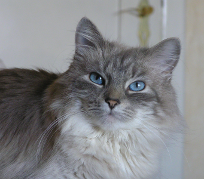

One of my favorite datasets for teaching is the Austin Animal Center Intake Dataset. The Austin Animal Center has recorded and published data on all intakes since October 1st 2013. That means we have 7 years worth of data! You can see the current data here.
Recently I was thinking about the cat of two friends of mine - Chris & Randi. Their cat is called Mr. Doggy. This led me to wonder - what other animals are cats named after - and which is the most popular?
Here are the steps I took to answer this. First, load tidyverse to do the data wrangling and plotting:
library(tidyverse)I downloaded the Austin Animal Center Intake data up to 13th October 2020 and put it on my github page. You can directly import that into R from my webpage like this:
df <- read_csv("https://raw.githubusercontent.com/jalapic/rblog/master/raw_data/Austin_Animal_Center_Intakes.csv")
head(df)
# A tibble: 6 x 12
`Animal ID` Name DateTime MonthYear `Found Location` `Intake Type`
<chr> <chr> <chr> <chr> <chr> <chr>
1 A786884 *Bro~ 01/03/2~ 01/03/20~ 2501 Magin Mead~ Stray
2 A706918 Belle 07/05/2~ 07/05/20~ 9409 Bluegrass ~ Stray
3 A724273 Runs~ 04/14/2~ 04/14/20~ 2818 Palomino T~ Stray
4 A665644 <NA> 10/21/2~ 10/21/20~ Austin (TX) Stray
5 A682524 Rio 06/29/2~ 06/29/20~ 800 Grove Blvd ~ Stray
6 A743852 Odin 02/18/2~ 02/18/20~ Austin (TX) Owner Surren~
# ... with 6 more variables: `Intake Condition` <chr>, `Animal
# Type` <chr>, `Sex upon Intake` <chr>, `Age upon Intake` <chr>,
# Breed <chr>, Color <chr>We have 12 columns in total. These are as follows:
colnames(df)
[1] "Animal ID" "Name" "DateTime"
[4] "MonthYear" "Found Location" "Intake Type"
[7] "Intake Condition" "Animal Type" "Sex upon Intake"
[10] "Age upon Intake" "Breed" "Color" Let’s look at what animal type is:
table(df$`Animal Type`)
Bird Cat Dog Livestock Other
567 45568 68650 21 6407 For this analysis, we’ll just focus on cats:
cats <- df %>% filter(`Animal Type` == "Cat")
head(cats)
# A tibble: 6 x 12
`Animal ID` Name DateTime MonthYear `Found Location` `Intake Type`
<chr> <chr> <chr> <chr> <chr> <chr>
1 A665644 <NA> 10/21/2~ 10/21/20~ Austin (TX) Stray
2 A774147 <NA> 06/11/2~ 06/11/20~ 6600 Elm Creek ~ Stray
3 A731435 *Cas~ 08/08/2~ 08/08/20~ Austin (TX) Owner Surren~
4 A790209 Ziggy 03/06/2~ 03/06/20~ 4424 S Mopac Ex~ Public Assist
5 A743114 <NA> 02/04/2~ 02/04/20~ 208 Beaver St i~ Stray
6 A657188 Tommy 11/10/2~ 11/10/20~ Austin (TX) Owner Surren~
# ... with 6 more variables: `Intake Condition` <chr>, `Animal
# Type` <chr>, `Sex upon Intake` <chr>, `Age upon Intake` <chr>,
# Breed <chr>, Color <chr>
nrow(cats)
[1] 45568
nrow(cats[!is.na(cats$Name),])
[1] 25181We have 45,568 cats in the dataset, and 25,181 of these have names!
To make the data a bit more readable, let’s just keep the columns that give the name, intake type, sex, age, breed and color. I’ll also clean up the column names:
cats1 <- cats %>% select(2,7,9:12)
colnames(cats1) <- c("name","type","sex","age","breed","color")
head(cats1)
# A tibble: 6 x 6
name type sex age breed color
<chr> <chr> <chr> <chr> <chr> <chr>
1 <NA> Sick Intact Fem~ 4 weeks Domestic Shorthai~ Calico
2 <NA> Injured Intact Fem~ 4 weeks Domestic Shorthai~ Black/White
3 *Casey Normal Neutered M~ 5 mont~ Domestic Shorthai~ Cream Tabby
4 Ziggy Normal Intact Fem~ 4 years Domestic Shorthai~ Brown Tabby/W~
5 <NA> Injured Intact Fem~ 2 years Domestic Shorthai~ Black/White
6 Tommy Normal Neutered M~ 14 yea~ Domestic Shorthai~ Brown Tabby/W~As you can see, not every cat has a given name. But we can do a search for any name we want. Let’s see if there are any cats with the name “fluff” or “fluffy”. I’ll first make all the cat names lower case, and I’ll remove the asterisks that some names have:
cats1$name <- tolower(gsub("\\*", "", cats1$name))
head(cats1)
# A tibble: 6 x 6
name type sex age breed color
<chr> <chr> <chr> <chr> <chr> <chr>
1 <NA> Sick Intact Fema~ 4 weeks Domestic Shorthai~ Calico
2 <NA> Injured Intact Fema~ 4 weeks Domestic Shorthai~ Black/White
3 casey Normal Neutered Ma~ 5 mont~ Domestic Shorthai~ Cream Tabby
4 ziggy Normal Intact Fema~ 4 years Domestic Shorthai~ Brown Tabby/W~
5 <NA> Injured Intact Fema~ 2 years Domestic Shorthai~ Black/White
6 tommy Normal Neutered Ma~ 14 yea~ Domestic Shorthai~ Brown Tabby/W~We can use grepl() to search for partial name matches:
cats1 %>% filter(grepl("fluf", name))
# A tibble: 52 x 6
name type sex age breed color
<chr> <chr> <chr> <chr> <chr> <chr>
1 fluffy Normal Intact Fem~ 3 wee~ Domestic Medium ~ Brown Tabby
2 fluffy Normal Spayed Fem~ 2 mon~ Domestic Shortha~ Blue Tabby
3 fluffern~ Normal Intact Male 4 wee~ Domestic Shortha~ Blue
4 fluff Normal Intact Fem~ 3 wee~ Domestic Shortha~ Brown Tabby~
5 fluffy Injured Neutered M~ 9 yea~ Domestic Longhai~ Black/White
6 fluff Normal Spayed Fem~ 2 yea~ Domestic Longhai~ Black
7 fluff Normal Spayed Fem~ 5 yea~ Domestic Shortha~ Blue Tabby
8 fluffy Normal Unknown 2 yea~ Domestic Longhai~ Cream
9 fluffy Normal Spayed Fem~ 2 yea~ Domestic Longhai~ Black
10 fluffy Normal Neutered M~ 5 yea~ Domestic Medium ~ Blue Tabby
# ... with 42 more rowsTurns out there are 52 different *fluf* variations - they are easier to see if we use table() on the name column:
cats1 %>% filter(grepl("fluf", name)) %>% .$name %>% table()
.
fluff fluffer fluffer nutter flufferkins
19 2 1 1
fluffernutt flufferton fluffette fluffy
1 1 1 21
fluffy butt fluffy fluff franz fluff fuzzyfluffy
1 1 1 1
mr. fluffers
1
Cats that are also animals:
Next, I realized that I needed a list of animals. Google helped me out and I found this list here. I just found read.csv() the quickest way of doing this:
animals <- read.csv("https://gist.githubusercontent.com/atduskgreg/3cf8ef48cb0d29cf151bedad81553a54/raw/82f142562cf50b0f6fb8010f890b2f934093553e/animals.txt",
header=F, stringsAsFactors = F)
head(animals)
V1
1 Canidae
2 Felidae
3 Cat
4 Cattle
5 Dog
6 Donkey
tail(animals)
V1
518 Ringneck dove
519 Sheep
520 Siamese fighting fish
521 Society finch
522 Yak
523 Water buffaloNext, we just need to filter the cats1 dataset for whether they contain the animal name. If we went for direct matches, we would be able to pull out e.g. “dog” but not “Mr dog”. But then, if we just went for partial matches, we might get some errors too. First I’ll try direct matches - i.e. the cat just has another animal’s name:
cats1 %>% filter(name %in% tolower(animals[,1]))
# A tibble: 545 x 6
name type sex age breed color
<chr> <chr> <chr> <chr> <chr> <chr>
1 sparrow Normal Neutered ~ 1 mon~ Domestic Shorthair M~ Black/White
2 harrier Normal Intact Ma~ 1 mon~ Domestic Shorthair M~ Brown Tabby
3 dolphin Normal Intact Fe~ 5 mon~ Domestic Shorthair M~ Blue
4 cat Normal Spayed Fe~ 6 yea~ Maine Coon Mix Brown Tabby
5 eagle Normal Intact Ma~ 4 wee~ American Curl Shorth~ Lynx Point
6 deer Normal Intact Fe~ 3 wee~ Domestic Shorthair Tortie
7 bear Normal Intact Ma~ 9 mon~ Siamese/Domestic Sho~ Black
8 kiwi Normal Neutered ~ 1 year Domestic Shorthair M~ Brown Tabby~
9 possum Normal Intact Fe~ 1 day Domestic Shorthair M~ Calico
10 monkey Normal Intact Fe~ 3 yea~ Domestic Shorthair M~ Tortie
# ... with 535 more rowsLet’s get a frequency count of these names:
cats1 %>% filter(name %in% tolower(animals[,1])) %>%
.$name %>% table()
.
armadillo badger bass bat bear
1 6 2 1 28
bee beetle bird blackbird bug
3 3 1 1 7
butterfly caribou cat caterpillar catfish
4 2 6 2 2
cheetah chickadee chicken chinchilla chipmunk
4 2 7 2 1
cicada cobra condor crab cricket
1 1 1 1 14
crow deer dingo dolphin dove
1 2 1 2 3
dragonfly duck eagle elephant elk
3 4 5 1 3
ermine falcon finch firefly fish
1 4 3 4 2
fly fox frog goose gopher
1 2 2 15 1
grasshopper guppy harrier hawk jaguar
7 9 1 5 3
jay kangaroo kiwi koala ladybug
8 1 14 1 6
lark lemming leopard lion lobster
2 1 1 2 1
lynx mackerel marlin mink mite
5 1 1 1 1
monkey moose mouse narwhal newt
21 18 15 1 2
opossum orca otter owl panda
4 1 8 3 9
panther penguin perch pig pigeon
12 5 1 1 5
platypus pony possum puffin puma
1 1 5 2 10
rabbit raccoon raven rooster scorpion
4 1 19 4 1
shrimp skunk snipe sparrow spider
2 2 1 10 3
squid squirrel sturgeon swan swift
5 6 1 2 1
tiger toad tortoise trout tuna
68 3 1 2 13
turkey turtle wallaby weasel wolf
10 9 1 2 1
wolverine wombat wren zebra
2 3 7 2
Looks like there is no dog !
Here are the top 10:
cats1 %>% filter(name %in% tolower(animals[,1])) %>%
group_by(name) %>% count() %>% arrange(-n)
# A tibble: 114 x 2
# Groups: name [114]
name n
<chr> <int>
1 tiger 68
2 bear 28
3 monkey 21
4 raven 19
5 moose 18
6 goose 15
7 mouse 15
8 cricket 14
9 kiwi 14
10 tuna 13
# ... with 104 more rowsLet’s make a plot of any animal that has more than 5 instances:
cats1 %>% filter(name %in% tolower(animals[,1])) %>%
group_by(name) %>% count() %>% arrange(-n) %>%
filter(n>5) %>%
ggplot( aes(x = reorder(name, n), y = n) ) +
geom_col(fill = "#123abc", color="#193642", alpha=.4) +
xlab("") +
ylab("Total Cats") +
ggtitle("Cats as Animals") +
theme_classic() +
coord_flip()
That will do for now! There’s much more we can do with this dataset in the future. Although, I will do a quick, final check for “Mr Dog” or “Mr Doggie”
cats1 %>% filter(grepl("dog", name))
# A tibble: 1 x 6
name type sex age breed color
<chr> <chr> <chr> <chr> <chr> <chr>
1 hotdog Normal Spayed Female 2 years Domestic Longhair Mix Blue Tabby
Nope - just ‘hotdog’ - a two year old blue tabby.
